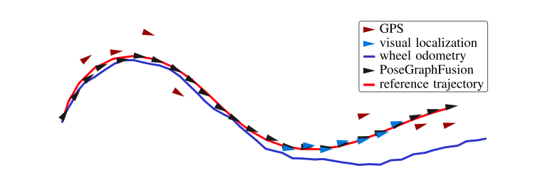
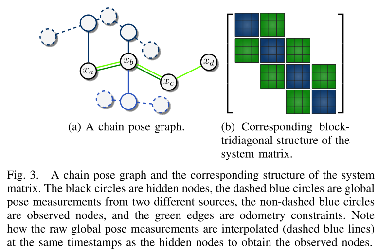
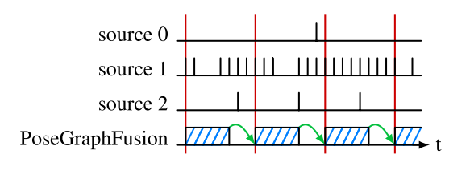
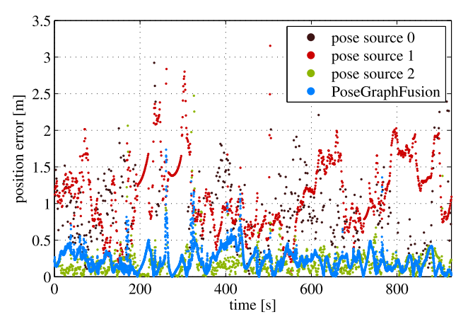
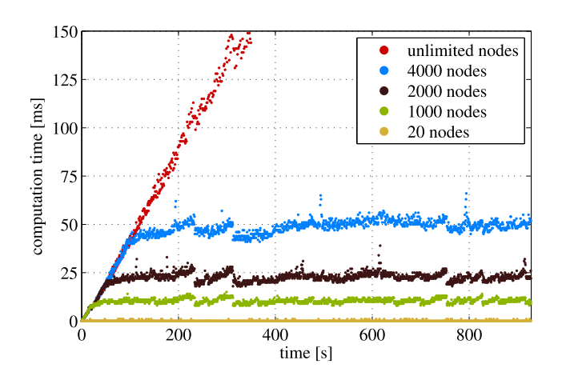
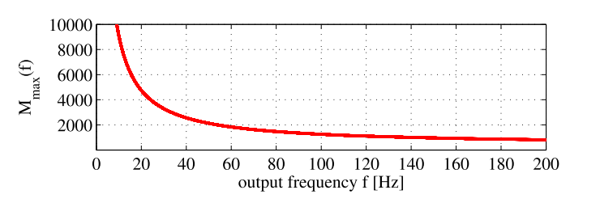
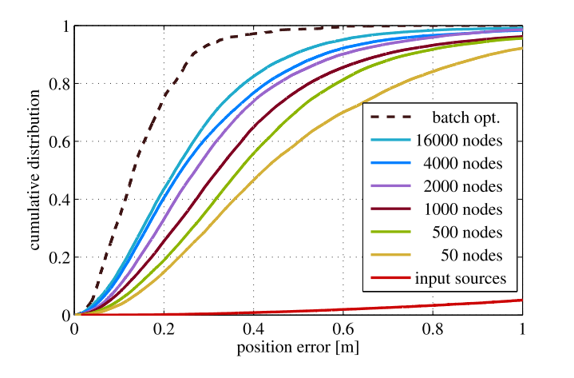
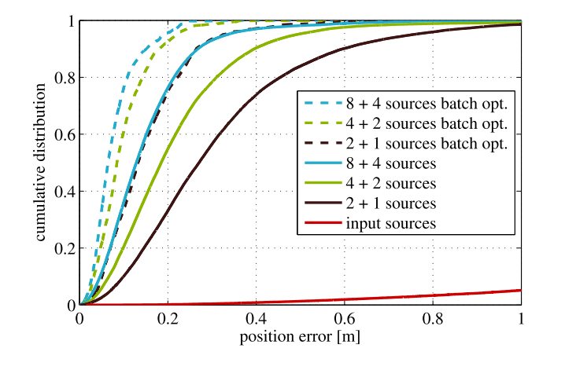

Christian Merfels is with Volkswagen Group Research, Wolfsburg, and Institute of Geodesy and Geoinformation, University of Bonn, Germany.
Cyrill Stachniss is with Institute of Geodesy and Geoinformation, University of Bonn, Germany.
2016 IEEE/RSJ International Conference on Intelligent Robots and Systems (IROS)
Combining multiple localization systems in a plug and play manner.
Formulate this approach as a sliding window pose graph.
The pose fusion approach scales from a filtering-based to a batch solution by increasing the size of the sliding window.
The experiment runs at 20Hz on both simulated and real data.
Individual localization system is not enough, and the combination of orthogonal localization systems is more powerful.
This paper provides an approach to multi-sensor data fusion decouples the localization from the fusion task, which eneables the ability to incorporate third-party localization modules for which source code is unavailable.
A coarse localization (red triangles), a precise but only temporary available localization (blue triangles), and odometry as dead reckoning trajectory (blue) are used to estimate the true trajectory (red) of a vehicle. The estimated poses are shown as black triangles: the goal is to approximate the unknown red line as closely as possible with the black triangles.

efficient sensor fusion of generic odometry and global pose inputs \(\Rightarrow\) an intuitive architecture for pose estimation and timing issues.
graph construction algorithm \(\Rightarrow\) a sparse block-tridiagonal structure of the system matrix \(\Rightarrow\) fast solution
filtering-based approaches: Kalman filter and its variants
feature: rely at a very early stage on the Markov assumption and marginalize all older information
problem: prematurely incorporating the linearization error.
sliding window smoothing algorithms: compute the maximum likelihood (ML) estimate by nonlinear least squares optimization to a Bayesian network, Markov random field (MRF), or factor graph.
feature: consider all past measurements up to the current one; and also consider future measurements for offline batch optimization.
solution: online batch optimization becomes feasible through the usage of incremental smoothing techniques, such as iSAM21, that recalculate only the part of the graph that is affected by new measurements.
Some implementations keep the size of the graph bounded by simply discarding older nodes and edges, thus potentially obtaining overconfident estimates.
Sibley et al.2, who are the first to introduce the concept of a slibing window filter in the context of robotics.
Differences:
apply this to the use case of pose fusion
special design for a faster way of solving the nonlinear least squares equations, performing marginalization, and estimating the uncertainty of the output.
provide a way of semantically reasoning about the prior information arising from marginalization by deriving a prior node.
This paper exploits the state-of-the-art graph optimization framework g2o3.
The key idea is that given the state vector \(x=(x_1^T, ..., x_m^T)^T\) and a set of measurements, where \(z_{ij}\) is the mean and \(\Omega_{ij}\) is the information matrix4 of a single measurement relating \(x_i\) to \(x_j\), least squares estimation seeks the state \[x^*=\arg\min_x{\sum_{i,j}e_{ij}^T\Omega_{ij}e_{ij}} \label{eq:state}\] that best explains all measurements given the \(\mathit{l}_2\) norm. The vector error function \(e_{ij}=e(x_i,x_j,z_{ij})\) measures how well the constraint from the measurement \(z_{ij}\) is satisfied. Solving \((\ref{eq:state})\) requires iteratively solving a linear system with the system matrix5 \(H\) and the right-hand side vector \(b\) such that \[H=\sum_{i,j}{J_{ij}(x)^T\Omega_{ij}J_{ij}(x)}\] \[b^T=\sum_{i,j}e_{ij}^T\Omega_{ij}J_{ij}(x)\] where \(J_{ij}(x)\) refers to the Jacobian6 of the error function computed in state \(x\).
general nonlinear least squares estimation taks into account all available information within the full pose graph
to keep the problem computationally tractable, it is necessary to limit the considered information.
this approach achieves this by marginalizing out prior state state variables and the state vector \(x\) in a sliding window pose graph is reduced to the M most recent states \(x=(x_{t-M+1}^T,...,x_t^T)^T\).
global pose source: measure poses within a global coordinate system, e.g. Universal Transverse Mercator (UTM) coordinate
local pose source: measure spatial transformations relative to the previous pose, e.g. odometry
hidden nodes (from MRFs): state variables
observed nodes (from MRFs): global pose constraints, connected to hidden nodes to constrain them in the global coordinate frame.
edge between hidden nodes: local pose constraints.
The resulting form or the graph is called chain pose graph.

Related graph-based approaches.
generate a hidden node (state variables) every time a measurement arrives
or tie their generation to a specific pose source
This approach constructs a hidden node every time stamp.
it queries all global pose sources for measurements and interpolate one observed node per source at the timestamp of the hidden node if measurements are available.
it queries each local pose source to interpolate the edges between all two successive hidden nodes.
enforce a certain matrix structure for H, to include all measurement sources in a generic way independetly of their specific output frequencies, and to a priori relate the number of state variables to the length of the interval of the sliding window.
The block-tridiagonal structure is a consequence of the linear temporal ordering of the state variables combined with the fact that edges are at most constructed between successive nodes.
This structure does not produce fill-in in system matrix \(H\) after marginalization of the oldest state variables.
Beyond that, even the Cholesky factorization7 \(H=R^TR\), which this paper perform to solve the linear system, does not suffer from fill-in in its triangular matrix \(R\) (becomes a band matrix).
The computational complexity of this approach is efficiently solvable in \(\mathcal{O}(n)\).
Define time behavior as the latency, frequency, and availability of estimate. The output of the PoseGraphFusion is time-triggered.
Difficulties:
multi-rate sources,
nonconstant input frequencies,
out-of-sequence estimates,
time-varying latencies.
Steps:
buffering all incoming data.
preprocessing it before the next graph construction phase.
constructing and optimizing the graph.
computation time
the most recent state is estimated with a sliding window pose graph over the current set of measurements.
The estimation result is subsequently propagated into the future to the start of the next cycle with a constant turn rate and velocity model.

The backward-forward computations problem of conventional Kalman filtering approaches: to integrate a new measurement, it has to propagate its state back in time to the time of the measurement, apply the measurement, and re-apply all other stored measurements.
Motivation: limit the amount of hidden nodes to maintain constant runtime complexity.
Problem: Simply removing edges and nodes leads to information loss and is equivalent to conditioning, which potentially leads to overconfidence.
Solution: only marginalize the oldest nodes. This truncates the graph but retains the same information (given te linearization point).
Common method: Computing the Schur complement8 on the system matrix \(H\).
Potential problem: may introduce conditional dependencies between state variables that are connected.
however, the structure of the chain pose graph is able to retain the same sparsity pattern and do not suffer from a denser system matrix after marginalization.
Prior node: this paper says, by exploiting the particular block-tridiagonal matrix structure, it derives the concept of a prior node, which carries the same information as introduced by the Schur complement. Therefore, it is advantageous to construct a prior node for marginalization instead of performing the Schur complement:
user has the possibility to understand how the prior information affects the rest of the graph.
it allows to store and load the optimization problem with solely the help of its graph representation.
it opens up the possibility to explicitly apply a robust kernel on the cost function of the prior node and to adjust the uncertainty of the prior information based on context.
*** Still working on the mathematical details... (planned 11/11) ***
*** Still working on the mathematical details... (planned 11/11) ***
The optimization assigns to the hidden nodes the global poses which best satisfy all constraints. Solving the nonlinear least squares problem of the pose fusion with a sparse solver typically involves computing the Cholesky factorization \(H=R^TR\), where \(R\) is an upper triangular matrix with entries \(r_ij\). Following the referred paper [13]9, the uncertainty matrix of the hidden nodes \(H^{-1}\) with entries \(H_{ij}^{-1}\) is obtained by the recursive formula: \[\begin{array}{rcl} H_{ii}^{-1} & = & \frac{1}{r_{ii}}\left[\frac{1}{r_{ii}}-\sum_{\begin{array}{c} k=i+1 \\ r_{ik} \neq 0 \\ \end{array}}^{n}{r_{ik}H_{ki}^{-1}}\right] \\ H_{ij}^{-1} & = & \frac{1}{r_{ii}}\left[-\sum_{\begin{array}{c} k=i+1 \\ r_{ik} \neq 0 \\ \end{array}}^{j}{r_{ik}H_{kj}^{-1}}-\sum_{\begin{array}{c} k=j+1 \\ r_{ik} \neq 0 \\ \end{array}}^{n}{r_{ik}H_{jk}^{-1}}\right] \end{array}\] The formula yields an \(\mathbb{O}(n)\) time complexity with \(n\) being the number of state variables. It becomes constant time for sliding window pose graphs as the number of state variables is upper bounded by a constant value.
This method needs to apply appropriate preprocessing (covariance intersection10) if noise is correlated between input sources:
different input source build up on the same sensor data
the same algorithm runs on two physically different sensors.
Combine groups of sources with correlated noise into a single consistent estimate.
Baseline: the online ML (maximum likelihood) estimate, scaling from a filtering to a batch least squares solution.
global sources:
source 0: coarse LiDAR scans to a globally referenced point cloud. (3rd-party)
source 1: GPS (3rd-party)
source 2: visual localization system with a globally referenced feature map.
local source: wheel odometry.
sliding window size: \(M=1000\)
temporal resolution: \(\Delta t=25ms\)
experiment route: \(16km\) in rural and urban areas in Germany.
Baseline: batch solution.
Noises are not independently distributed with zero mean and the uncertainty models are unknown.
source 0: \(RMS=1.06m\)
source 1: \(RMS=1.23m\)
source 2: \(RMS=0.28m\)
PoseGraphFusion: \(RMS=0.38m\)

Latency: \(\leq 10ms\).
Availability:
source 0: \(66.98\%\)
source 1 with odometry: \(100\%\)
source 2: \(97.76\%\)
PoseGraphFusion: \(100\%\)
a single core of a laptop with an Intel i7-4800QM processor
 
Larger sliding window size \(\Rightarrow\) more accurate result

More pose sources \(\Rightarrow\) more accurate result

Motivation: the need for fast, recent, accurate, and highly available pose estimates.
Method: a sliding window graph-based optimization scheme.
The design of chain pose graphs for efficient optimization.
M. Kaess, H. Johannsson, R. Roberts, V. Ila, J. Leonard, and F. Del- laert, “iSAM2: Incremental Smoothing and Mapping using the Bayes tree," Int. Journal of Robotics Research, pp. 216–235, 2012.↩
G. Sibley, L. Matthies, and G. Sukhatme, “SlidingWindow Filter with Application to Planetary Landing," Journal of Field Robotics, vol. 27, no. 5, pp. 587–608, 2010↩
R. K¨ ummerle, G. Grisetti, H. Strasdat, K. Konolige, and W. Burgard, “g2o: A General Framework for Graph Optimization," in Proc. IEEE Int. Conf. Robotics and Automation (ICRA), 2011, pp. 3607–3613.↩
https://en.wikipedia.org/wiki/Jacobian_matrix_and_determinant↩
M. Kaess and F. Dellaert, “Covariance Recovery from a Square Root Information Matrix for Data Association," Robotics and Autonomous Systems, pp. 1198–1210, 2009.↩
S. J. Julier and J. K. Uhlmann, “A non-divergent estimation algorithm in the presence of unknown correlations," in Proc. Amer. Control Conf. (ACC), 1997, pp. 2369–2373.↩